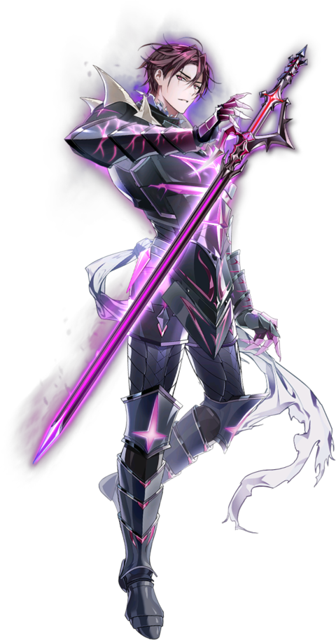

" Tu ne redeviendras ni os ni poussière "
Un Acolyte à la tête d'une armée de morts-vivants pleins de rancunes, baptisés les Marcheurs de poussières.
Son visage est toujours couvert de lassitude, cachant ses pensées, il est difficile de savoir à quoi il pense.
Avec son épée qui contient la puissance de l'Archidémon, il arrive à manipuler tout adversaire perdant
comme un esclave et ceux refusant de mourir reviennent à la vie pour servir dans son armée.
Contrairement aux autres Acolytes qui s'adonnent à la destruction par simple plaisir,
Kayron semble quand à lui avoir un but bien précis à atteindre,
Bien que celui-ci reste un mystère.
Son visage est toujours couvert de lassitude, cachant ses pensées, il est difficile de savoir à quoi il pense.
Avec son épée qui contient la puissance de l'Archidémon, il arrive à manipuler tout adversaire perdant
comme un esclave et ceux refusant de mourir reviennent à la vie pour servir dans son armée.
Contrairement aux autres Acolytes qui s'adonnent à la destruction par simple plaisir,
Kayron semble quand à lui avoir un but bien précis à atteindre,
Bien que celui-ci reste un mystère.
Entaille du vide
Attaque avec une épée, avec 35% de chance de réduire les chances de coup réussi pendant 1 tour. Les dégâts augmentent proportionnellement à la santé perdue du lanceur.
Volonté immortelle
Confère immortalité pendant 1 tour lorsque le lanceur subit des dégâts mortels et réinitialise la recharge de Apocalypse. Ne peut être activé qu'une fois tous les 9 tour(s). Lors du tour du lanceur, s'il bénéficie d'un bonus et utilise Entaille du vide, la compétence devient une attaque de zone d'effet et n'active pas de double attaque.
Apocalypse
Attaque l'ennemi en faisant exploser la Puissance de l'Archidémon contenue dans son épée avant d'augmenter l'Attaque du lanceur pendant 2 tours. Si l'ennemi est vaincu, prolonge la durée des bonus dont bénéficie le lanceur pendant 1 tour. Les dégâts augmentent proportionnellement à la santé perdue du lanceur.Base stats
Awakened Stats
| Level | Stars | Cp | Attack | Hp | Def |
| 50 | 5 | 11117 | 713 | 3913 | 390 |
| 60 | 6 | 13872 | 889 | 4920 | 483 |
| Level | Stars | Cp | Attack | Hp | Def |
| 50 | 5 | 12786 | 897 | 4253 | 390 |
| 60 | 6 | 16141 | 1119 | 5340 | 483 |